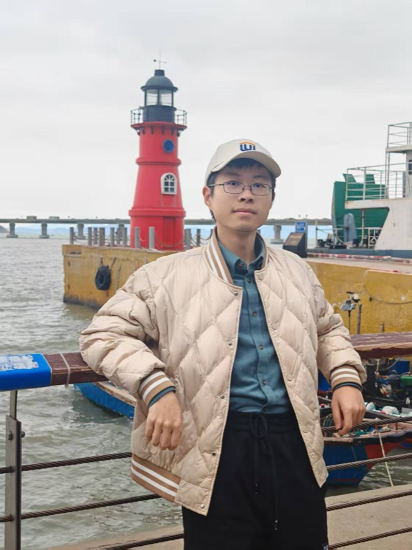
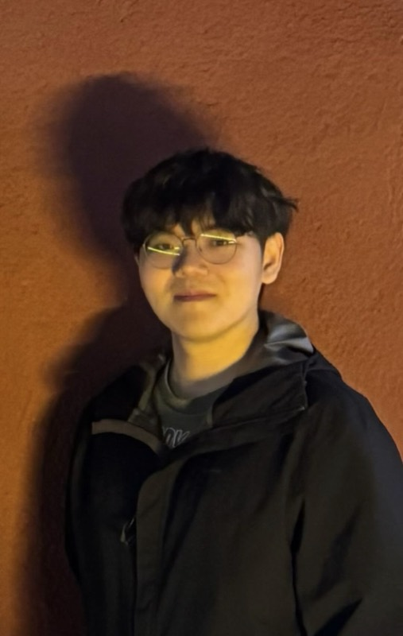
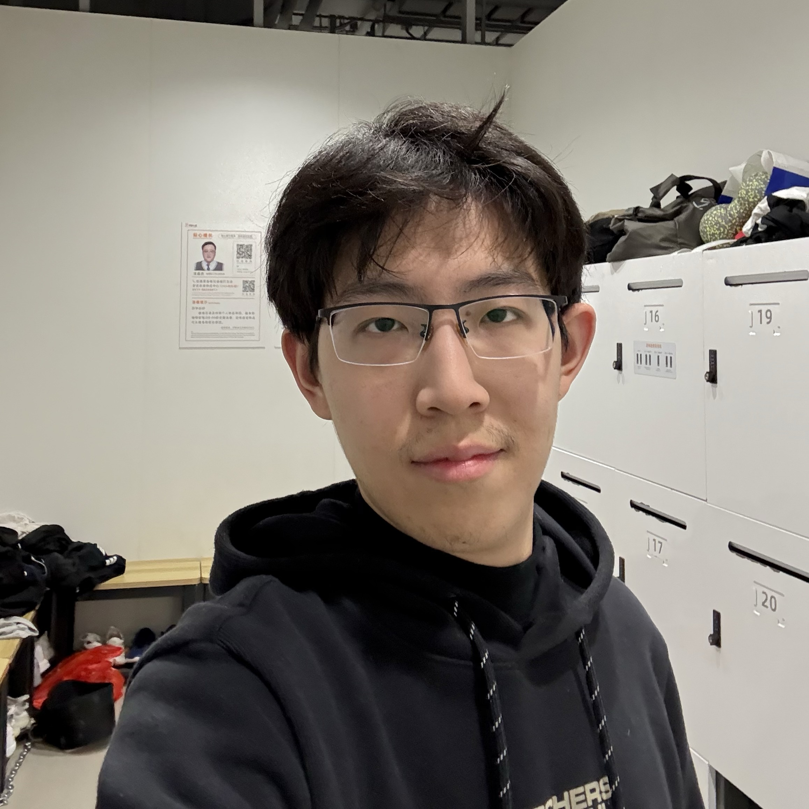
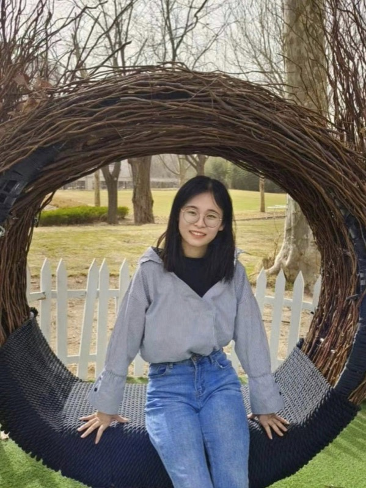
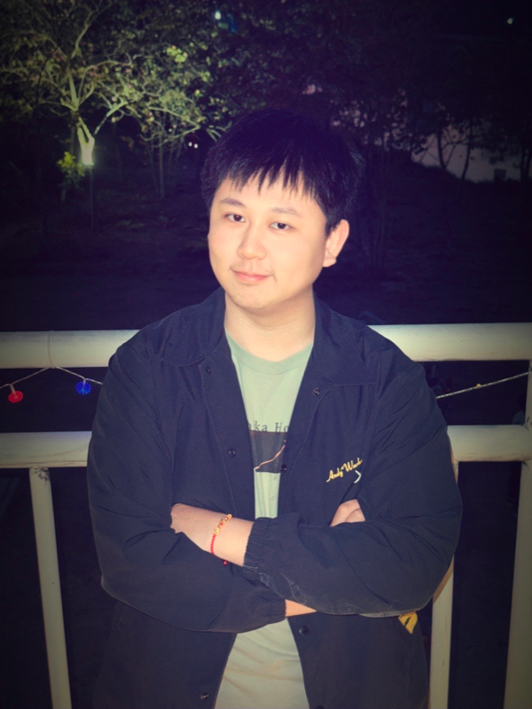

Huan Wang
Assistant Professor
PhD@NEU, MS&BS@ZJU

The people behind ENCODE Lab.
Assistant Professor
PhD@NEU, MS&BS@ZJU
Administrative Assistant
MFA@Goldsmiths, BA@CAA
Postdoc Researcher
PhD@SJTU, Since Jan 2025

Fall 2025 -
BS@ZJU

Fall 2025 -
BS@XDU

Fall 2025 -
BS@BUPT

Fall 2026 -
MS@Beihang
BS@NWPU

Fall 2026 -
MS@CUHK
BS@FZU
Fall 2027 -
BS@ZJU